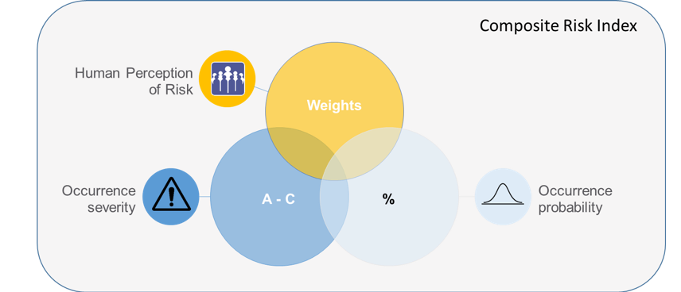
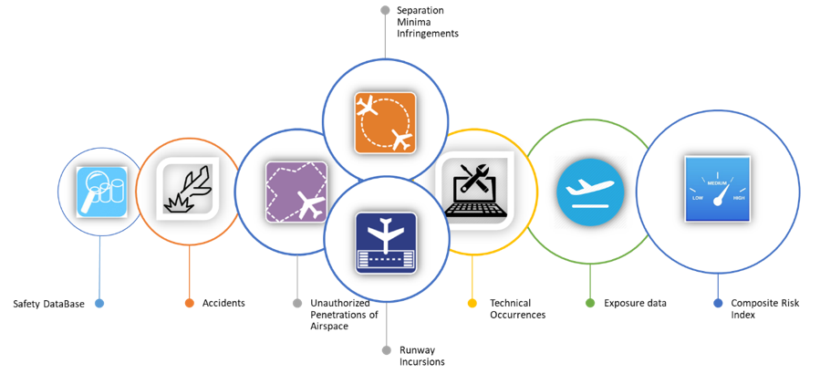
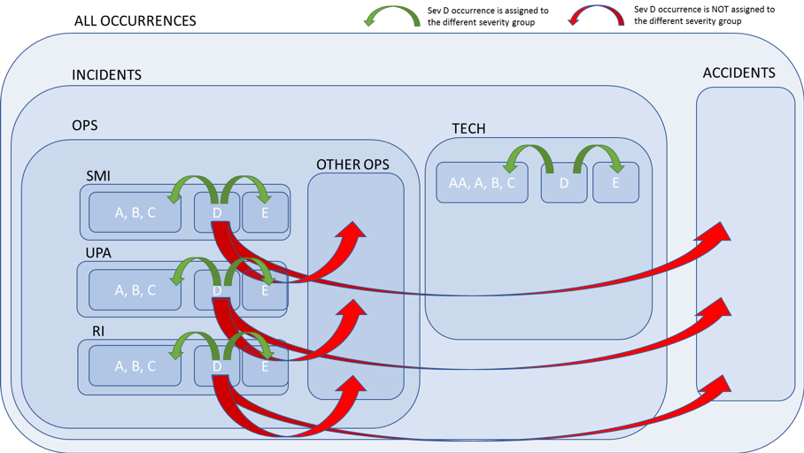

Composite Risk Index Methodology
This page provides a technical description of the preliminary methodology used to calculate the Composite Risk Index (CRI).
NOTE: The CRI methodology has been improved to also consider specific local operating conditions, airspace size, capacity and/or complexity. For more information please visit Composite Risk Index (CRI) Methodology Update.
The CRI represents a cumulative risk value aggregating all reported, assessed and severity classified safety-related incidents to form an index. This measure of risk exposure is based on probability and severity that considers the human perception of equivalent risk.
Note that CRI can be calculated for any given entity, provider or the State.
Figure @ref(fig:cri-components) shows all components of proposed CRI index.
(ref:cri-components) Composite Risk Index components.
Acronyms and terminology
| Term | Definition |
|---|---|
| CRI | Composite Risk Index |
| CRInorm | Composite Risk Index normalised by flight hours |
| RI | Runway Incursion |
| UPA | Unauthorised Penetration of Airspace |
| SMI | Separation Minima Infringement |
| TECH | ATM Specific / Technical occurrences |
Methodology
As a proxy of safety risk within certain airspace, State, or any Entity, the concept of exposure to risk, based on reported / historical safety information was proposed.
In order to calculate the composite risk, each historical, reported occurrence had to have assigned severity (using Risk Assessment Tool methodology) and probability (calculated from historical safety data).
Modelling can be performed using any source of safety occurrences data, as long as the input satisfies the minimum data requirements.
The CRI calculations are based on the following information:
- Accidents
- Operation occurrences (high/medium risk incidents with Severity A to C):
- runway incursions (RI)
- separation minima infringements (SMI)
- unauthorized penetrations of airspace (UPA)
- Other operational occurrences
- Technical occurrences (high/medium risk incidents with Severity AA/A to C)
A detailed data description can be found at the end of this page.
To take into account the local conditions within each Entity, exposure data, i.e. the total number of flight hours within each Entity is used as an additional input (CRI normalised results).
The process is visualised in Figure @ref(fig:cri-data-input).
(ref:cri-data-input) Composite Risk Index process.

Occurrences with no severity classification
All severity unclassified/not assessed events (Severity Category D) are distributed into groups A to E, based on historical distribution (determined using the all available safety data).
The probability of occurrence being assigned to a specific severity category is calculated using historical data, separately for each State/Entity in order to simulate/take into consideration the local conditions.
Figure @ref(fig:cri-sevD) shows how unassessed occurences (severity D) are distributed into other severity groups.
(ref:cri-sevD) Distribution of unassessed occurences (severity D) into other severity groups.

Estimated numbers of occurrences
The formula how the total numbers of specific type of occurrence were determined using the distribution based on probability of unclassified occurrences is presented below.
\[ \text{No_occ_est}_i = ((\text{No_D}_i * P_i) + \text{No_occ}_i) \]
where
- \(\text{No_occ_est}_i\)
- estimated number of safety occurrence type \(i\)
- \(\text{No_D}_i\)
- number of reported occurrences of Severity Classification D (not determined) for occurrence type \(i\)
- \(P_i\)
- probability of safety occurrence type \(i\)
- \(\text{No_D}_i\)
- number of reported safety occurrences of type \(i\)
The probability of each type of occurrence is calculated using the simple principle:
\[ P_i = \frac{\text{No_occ}_i}{\text{Total No}_{{occ}_i}} \]
- \(\text{No_occ}_i\)
- number of reported safety occurrences type \(i\) in a year
- \(\text{Total No}_{{occ}_i}\)
- total number of reported safety occurrences type \(i\) in a group in all years
CRI calculation using human perception of risk
Using the estimated total number of occurrences for each type and adding to it the human perception of their risk, it is possible to calculate the CRI for each Entity separately. The simple formula to calculate the CRI is presented below.
\[\begin{align} \text{CRI}_i & = \text{No}_{\text{occ_est_i}} * w_i \\ \text{CRI} & = \sum_{i}^{} \frac{\text{CRI}_i}{\text{Total No}_{{occ}}} \end{align}\]
where
- \(\text{CRI}_i\)
- CRI index for occurrence type \(i\)
- \(w_i\)
- weight (based on severity and human perception) assigned to specific type of safety occurrence
- \(\text{Total No}_{{occ}}\)
- total number of all occurrences in a year
In the formula above the Weights added to each equation represent the additional human perception of the risk for the specific event so that the CRI can at the end consider the human perception of equivalent risk.
Introduction of Weights to express the severity of the event allows their description in non-monetary terms which have a meaningful and understandable explanation in human perception.
Each weight value for specific Severity category is determined by using the optimisation technique, with the aim to select a combination of weights that will not disturb the computation of the CRI from year to year if significant changes in reporting are introduced. In other words, the optimisation will find which combination of weights result in the lowest standard deviation of CRI values between the years for each Entity.
Due to a large number of variables involved and the enormous number of combinations possible, the optimisation and selection of the Weights combination is done in stages:
Selection of Weights for accident, all OPS occurrences and TECH occurrences
Selection of Weights for OPS occurrences based on their type (RI, SMI, UPA, OTHER), taking into consideration overall OPS Weight determined in Step 1
Selection of Weights for OPS and TECH occurrences based on their severity (AA/A, B, C), taking into consideration overall OPS Weight determined in Step 2
In addition, each type of weight selection has predefined weight ranges, to allow for an incremental Severity classification order, based on human perception of risk (from accident to Severity C incident, i.e. from high risk to low risk). In other words, each range has an expectation value associated with it. See further details in the methodology report (Commission 2019)
CRI normalisation
To allow the applicability of the CRI to airspaces with different traffic levels, the CRI is normalised by flight hours for each Entity. The CRInorm is calculated based on the following formula:
CRInorm =CRI/(Number of Flight Hours)
Data
For CRI calculation, each historical, reported occurrence besides classification, has to have assigned severity and probability.
Modelling of Weights can be performed using any source of safety occurrences data, as long as the input satisfies the minimum data requirements as in the table below. Note, that safety data, should include occurrence severity, reported and calculated using severity classification of the Risk Assessment Methodology.
| Variable | Description |
|---|---|
| Entity | the name of Entity within State, ANSP, or department |
| accident | safety occurrence where: a person is fatally or seriously injured; the aircraft sustains damage or structural failure; the aircraft is missing or is completely inaccessible” |
| total_no_of_ops_occurrences | the sum of safety occurrences (incidents) related to OPS |
| ri_a | runway incursions severity A |
| smi_a | separation minima infringments severity A |
| upa_a | unauthorised penetration of airspace severity A |
| ri_b | runway incursions severity B |
| smi_b | separation minima infringments severity B |
| upa_b | unauthorised penetration of airspace severity B |
| ri_c | runway incursions severity C |
| smi_c | separation minima infringments severity C |
| upa_c | unauthorised penetration of airspace severity C |
| ri_d | runway incursions severity D |
| smi_d | separation minima infringments severity D |
| upa_d | unauthorised penetration of airspace severity D |
| ri_e | runway incursions severity E |
| smi_e | separation minima infringments severity E |
| upa_e | unauthorised penetration of airspace severity E |
| total_no_of_tech_occurrences | the sum of safety occurrences related to technical reasons |
| t_aa | technical occurrences severity AA |
| t_a | techechnical occurrences severity A |
| t_b | techchnical occurrences severity B |
| t_c | techechnical occurrences severity C |
| t_d | techechnical occurrences severity D |
| t_e | techechnical occurrences severity E |
| total_number_of_all_reported_occurrences | sum of all OPS and TECH occurences |
| year | year |
| flight_hours | sum of flight hours in Entity for year n |
Severity
The classification scheme for safety occurrences in ATM specifies six severity categories for ATM related occurrences impacting the safe operations of the aircraft (as per ESARR2).
| Severity | Description |
|---|---|
| A | serious incident |
| B | major incident |
| C | significant incident |
| D | not determined |
| E | no safety effect |
Frequency
The RAT classification scheme specifies five qualitative frequency categories (repeatability). However, these values are not commonly reported through the AST. Each State/Entity in principle should develop their own quantitative boundaries, which should consider national traffic volumes and specific operating conditions of the national ATM system.
Therefore, the occurrence probability is calculated using historical data from all available years separately for each Entity in order to simulate/take into consideration the local conditions.
Further Information
For further information on the preliminary methodology please refer also to the report explaining the development of the methodology (Commission 2019).
For more detailed information on the updated methodology, please see the PRC Technical Note explaining the further development of the methodology (Commission 2020). The technical note explains several statistical methods used to model index weights, overall computation, logic behind it, its use and limitations, and lastly areas of further improvement and expansion.
Working example
Script calculating the CRI using the explained methodology and sample data are available for testing purposes [here] crizip.
Please feel free to use sample data provided to get familiar with the methodology.
User guide how to set up the environment can be found at ‘README.pdf’ file within repository.
References
Commission, Performance Review. 2019. “Composite Risk Index (CRI) - Methodology.” EUROCONTROL. https://ansperformance.eu/library/Composite_Risk_Index_methodology.pdf.
———. 2020. “Updated Composite Risk Index (CRI) - Methodology.” EUROCONTROL. https://ansperformance.eu/library/prc_tn_2021_01_Composite_Risk_Index_Methodology.pdf.